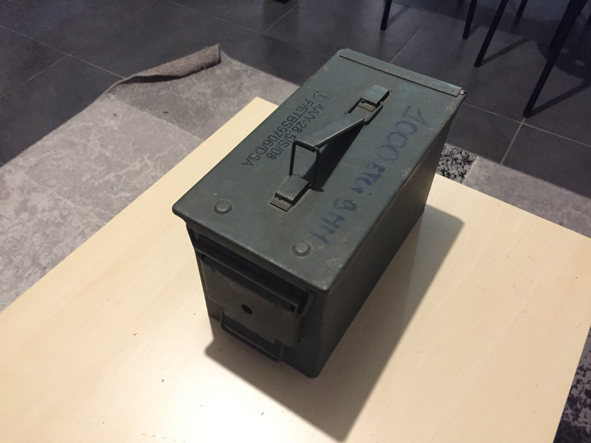
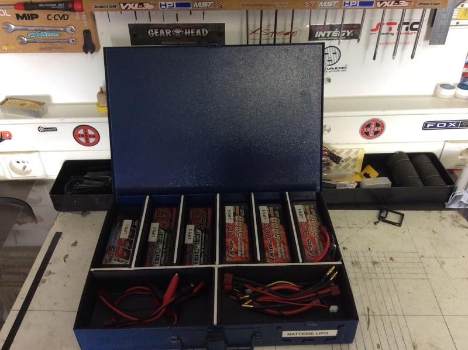
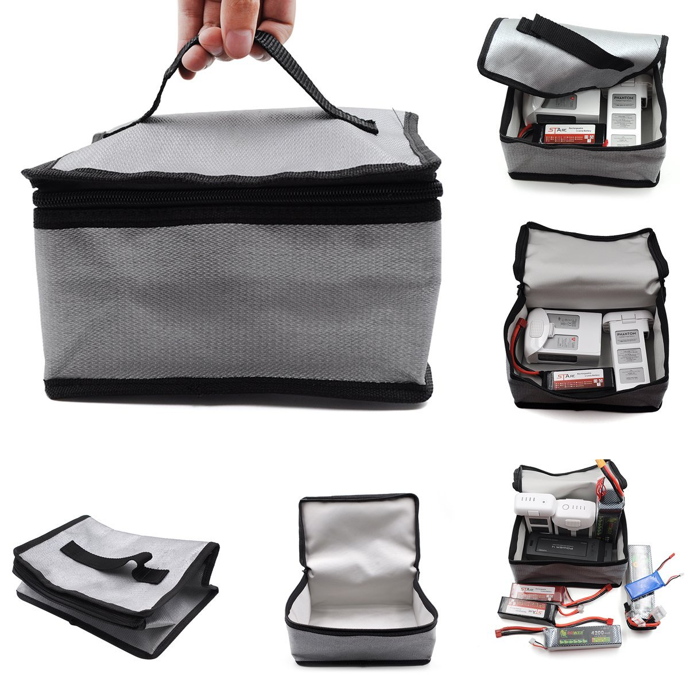
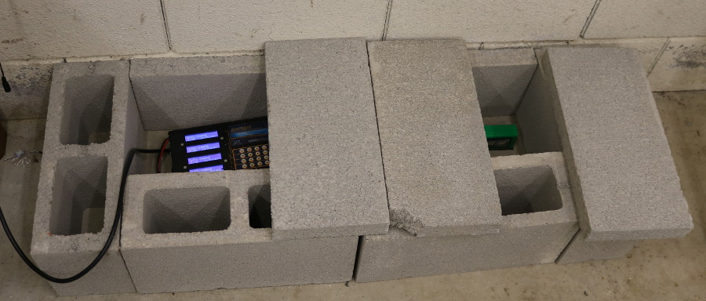

5 astuces pour stocker ses batteries au lithium
Bonjour à toutes et à tous. Aujourd’hui, je vous propose une petite astuce pour stocker toutes ses batteries lipo ou autre en sécurité.
1er astuce
La caisse à munition, il vous suffit de vous procurer une caisse à munition et de déposer ses lipos dedans en prenant soin de les rangers. Elle a pour avantage d’être plus efficace qu’une boîte à gâteau et plus facile à transporter qu’un coffre fort.
C’est le compris idéal entre ces 2 solutions, elle offre robustesse, capacité et maniabilité.
Personnellement, j’ai opté pour cette solution, je vous mets en lien celle que je me suis procurée. C’est une caisse d’occasion ce qui lui donne un certain charme.
Cliquez ici pour voir la caisse à munition

2ème astuce
Deuxième astuce, vous pouvez récupérer une vieille boîte à gâteau dans votre placard ou autre du moment qu’elle est en métal. Vous pouvez ensuite y mettre vos batteries en toute sécurité.
Attention, n’utilisez pas de boîte en boit, en plastique ou tout autre matériau combustible ça ne protégera rien si ça prend feu. Éviter aussi de mettre du polystyrène ou de la mousse au fond de la boîte pour protéger ce sont des matériaux inflammables.

3ème astuce
La troisième astuce est le sac anti-feu est un sac qui ralentira la combustion si vos batteries ce mettent à brûler. Il est notamment très utilisé lors de la charge des batteries, car c’est à ce moment où les batteries sont le plus instables. Il peut aussi être utilisé pour ranger ses batteries. Mais nous allons voir qu’il y’a des moyens plus efficace et plus sécuritaire de stocker ses batteries.

4ème astuce
Le bunker en parpaing, cette astuce réside à empiler des parpaings dans un coin afin de former un abri. On y déposera ensuite pour y déposer ces lipos. C’est une technique essentiellement utiliser pour la charge des batteries.

5ème astuce
Cette astuce va peut-être vous paraître loufoque, mais elle est utilisée par certains modélistes. Elle consiste à mettre toutes ses batteries dans un coffre fort. Au moins, si l’une d’elles prend feu quand vous n’êtes pas là vous ne risquez pas de faire brûler toute la maison.
Je vous rassure par besoin d’acheter le coffre fort haut de gamme, celui que vous trouvez dans les magasins de bricolage suffit.
Vous pouvez aussi en trouver sur amazon ici ou ici
Précaution
Avant de stocker vos batteries, pensez à décharger (50% de la charge) vos batteries lorsque vous ne les utilisez pas. De nos jours, de nombreux chargeurs sont équipés d’une fonction storage.